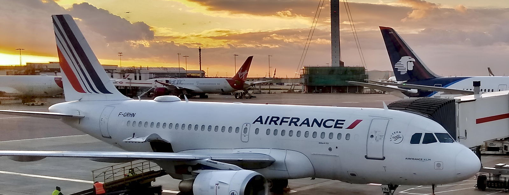

How To Ace A Cabin Crew Open Day
What really happens on the day, the behaviours that are scored, and the preparation that separates the people who progress from the people who go home.
An open day is the stage where most candidates are lost, and it is also the stage that rewards preparation most reliably. Very little of it is luck. Airlines run these days to a pattern, they assess a known set of behaviours, and once you understand both, the day stops being an ordeal and becomes something you can walk into ready.
What an open day actually is
An open day — sometimes called an assessment day, a recruitment day or a walk-in day — is a mass first-stage screening. Depending on the airline and the base, anywhere from fifty to several hundred candidates attend, and only a fraction leave with a next stage. That ratio is not a reason to be discouraged. It is a reason to be deliberate, because the people who progress are rarely the most polished. They are the ones who behaved consistently for six hours.
Some open days are advertised and require a booking. Others are genuinely walk-in. Either way, the airline publishes what to bring and what is expected. Read that page properly — it is the first thing you will be assessed on, even if nobody says so.
The running order
Airlines vary, but the shape is remarkably consistent:
- Registration. Documents checked, CV and photographs collected, sometimes a number allocated. Arrive with everything in one folder, in the order requested.
- Presentation. The airline explains the role honestly — rosters, bases, bonding, relocation, pay structure. Listen properly. Later questions often reference something said here, and candidates who clearly were not listening stand out.
- First cut. Many airlines make an early reduction after a brief interaction, a reach test, or a short introduction to the room.
- Group exercise. A discussion or task, usually with a deliberately tight deadline.
- Individual interview. Competency questions, occasionally a language or English assessment.
- Final panel. For those shortlisted, often on a later date.
Days overrun. Plan for the whole day, and assume nothing finishes when the schedule says it will.
You are being assessed when nobody is talking to you
This is the single most useful thing to understand. Recruiters and existing crew move through the waiting areas all day. They notice who talks to the person sitting alone, who is still pleasant three hours in, who is on their phone with their back to the room, and who is polite to the assistant handing out water but performs for the person with the clipboard.
The role is twelve hours in a metal tube with strangers, some of whom will be difficult. Airlines are not assessing your best ninety seconds. They are assessing your baseline.
The group exercise
Group tasks are not won by dominating them. The behaviours that consistently score are unglamorous:
- Bringing in someone who has not spoken — "we have not heard from you yet, what do you think?"
- Keeping the group aware of the time without becoming the timekeeper who nags.
- Summarising where the discussion has reached when it starts going in circles.
- Disagreeing without friction — "I see it slightly differently, can I offer another angle?"
- Accepting a decision that went against you and getting on with the task.
What sinks people: talking over others, repeating a point already made to be seen talking, going silent for the whole exercise, or treating it as a competition with the other candidates. It is not. Every person in that circle could be hired, or none of them.
What to bring
- More copies of your CV and photographs than the instructions ask for.
- Passport and any documents specified, plus certificates if requested.
- A folder that keeps everything flat and in order.
- Water and something small to eat. Food is not guaranteed and the day is long.
- A pen. It is astonishing how many people need one and how it looks when you do not have one.
- Flat shoes for the journey if you are travelling far, changed before you arrive.
How to present yourself
Business dress, conservative colours, immaculate grooming, and a look you can maintain for a full day rather than one that needs constant repair. Follow the airline's published standard exactly where one exists — some are highly specific about hair, make-up and accessories. Our guide to grooming and presentation standards covers this in detail.
Where candidates are usually cut
Rarely on qualifications, because the requirements were published in advance and most people in the room meet them. Far more often on behaviour:
- Arriving late, or arriving flustered because the journey was not planned.
- An answer that is clearly rehearsed and does not address the question asked.
- Visible impatience when the day runs over.
- Treating one member of staff differently from another.
- Presentation that does not meet a standard the airline published in advance.
- Talking about the job as glamour and travel, with nothing about safety or service.
If you are not selected
Most people are not, most times. Airlines run open days repeatedly and reapplication is normal — though many have a waiting period of six or twelve months before you can attend again, so check the airline's policy rather than turning up at the next one. Ask yourself honestly which stage you fell at, and work on that specific thing rather than starting again from nothing. Plenty of crew flying today were unsuccessful the first time, and the second.
The short version
- You are assessed from the moment you arrive, including while you wait.
- Group exercises reward including others, not dominating them.
- Meet the published presentation standard exactly — it is free marks.
- Bring more copies of everything than the instructions ask for.
- Most people are unsuccessful the first time. Reapplying is normal.